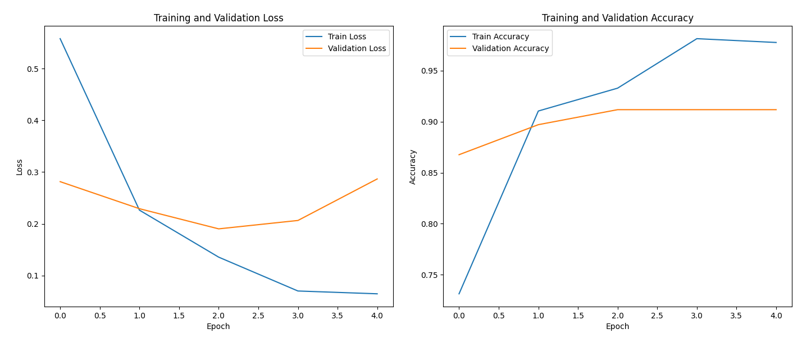
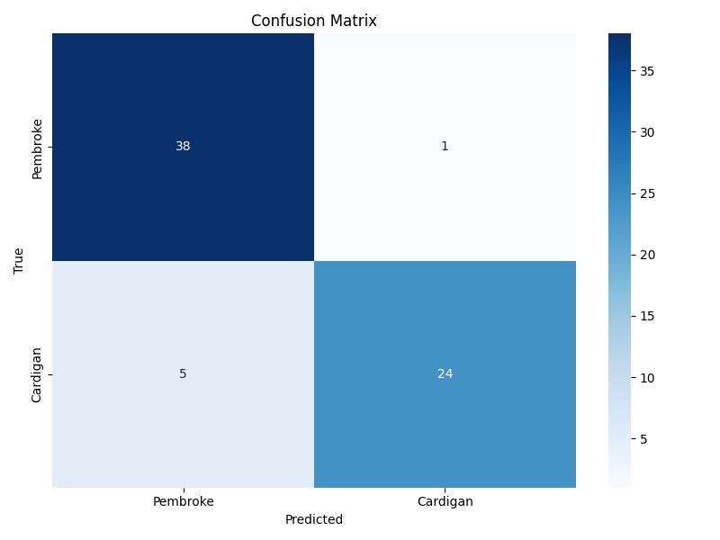
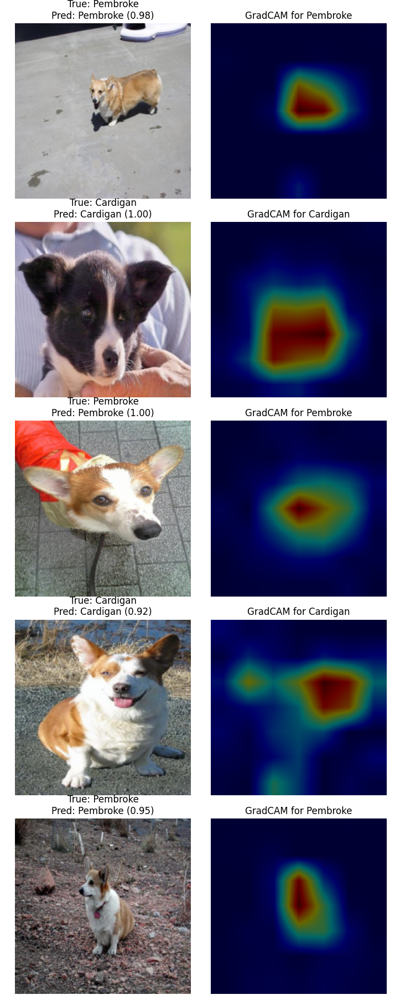
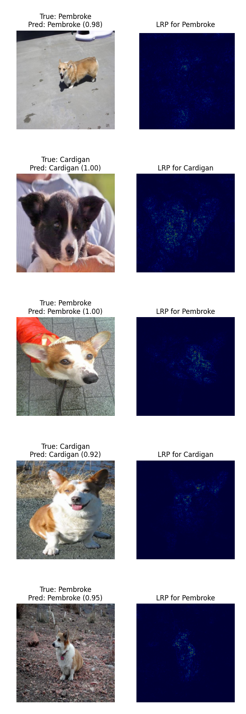
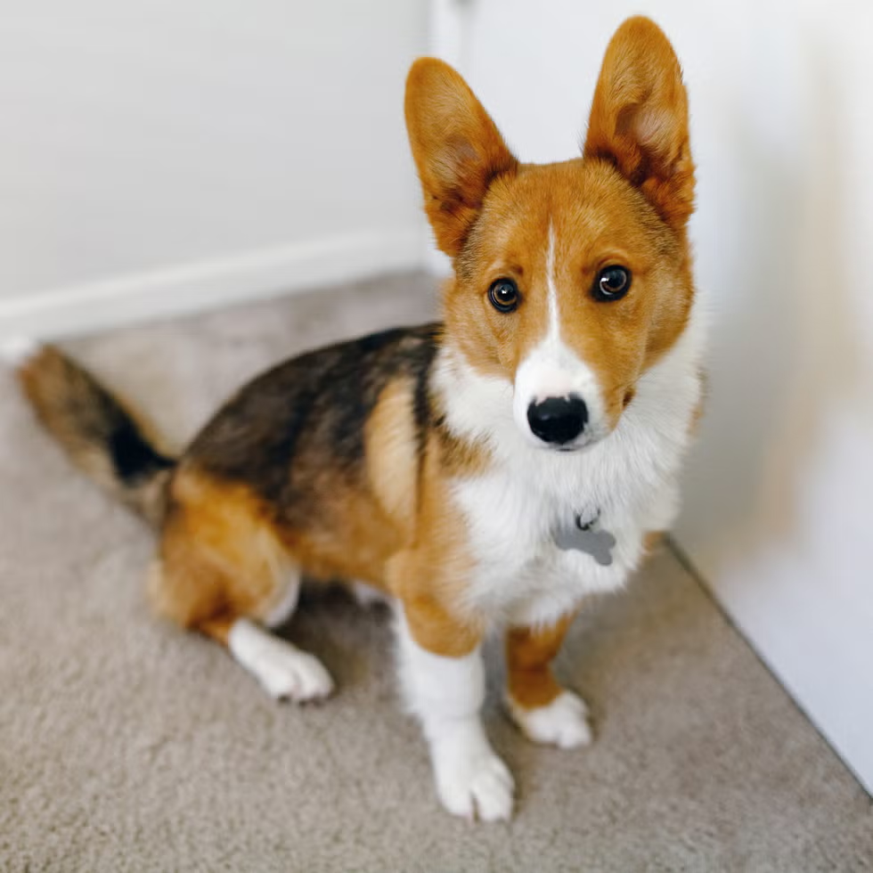
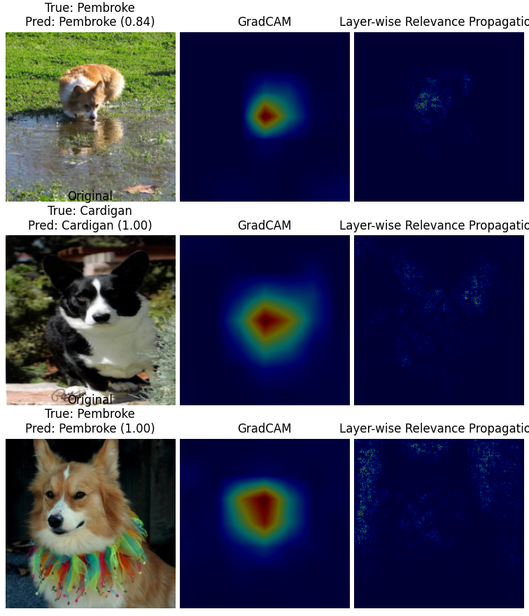

Explainable AI mit Bilddaten
Unterscheidung von Pembroke und Cardigan Welsh Corgis
Lukas, Janik, Robin, Felix
DHBW - ExAI Projekt
Agenda
- Zielsetzung
- Datensatz-Auswahl & Preprocessing
- Modelltraining
- XAI Verfahren
- Notebook
- Analyse & Kritische Diskussion
Problemstellung
Unterscheidung der Corgi-Rassen Pembroke und Cardigan mit Hilfe eines CNN.
Untersuchung
Beobachtung des Verhaltens bei Input von Mischlingen
Ziel: Erklärbare Entscheidungen durch XAI-Methoden
Datensatz-Auswahl & Preprocessing
Datensatz
- Stanford Dogs Dataset
- 120 Hunderassen, über 20.000 Bilder
- Verwendung der Klassen: Pembroke & Cardigan Welsh Corgi
- Link zum Datensatz
Datenvorverarbeitung
- Train/Val-Split im Verhältnis 80%/20%
- Bildtransformationen für Trainingsdaten:
- Resize auf 224x224px
- Random Horizontal Flip
- Random Rotation (10°)
- Color Jitter (Helligkeit, Kontrast, Sättigung)
- Für Validierungsdaten: nur Resize und Normalisierung
- Normalisierung mit ImageNet-Mittelwerten: [0.485, 0.456, 0.406], [0.229, 0.224, 0.225]
Modellauswahl
- Verwendung eines Convolutional Neural Networks (CNN) für Bilddaten
- Begründung: CNNs sind spezialisiert auf die Extraktion von Merkmalen aus Bildern
- Transfer Learning mit ResNet50, vortrainiert auf ImageNet
- Fine-Tuning auf Corgis (Pembroke&Cardigan)
- Nur letzte Layer ersetzt: Dense Layer für 2-Klassen Klassifikation
Modellarchitektur & Training
- Architektur: ResNet50 mit 50 Layern, Dense Layer für 2-Klassen Klassifikation
- Hyperparameter: Learning Rate 0.001, Batch Size 32
- Aktivierungsfunktionen: ReLU in den versteckten Schichten
- Training: CrossEntropyLoss als Verlustfunktion, Adam Optimizer
- Transfer Learning: Nur letzte Schichten trainiert
- 10 Epochen für Feinabstimmung
- Aufteilung: 70% Training, 15% Validierung, 15% Test
Modell-Ergebnisse
- Accuracy: >90% auf Validierungsdaten
- Transfer Learning mit Fine-Tuning der letzten Layer (layer4)
- Früher Trainingsabbruch durch Early Stopping (patience=5)
- Adaptive Lernrate mit ReduceLROnPlateau Scheduler
- Beste Ergebnisse bei Bildern mit klaren rassetypischen Merkmalen

Konstante Abnahme des Trainingsverlusts und Zunahme der Genauigkeit ohne Überanpassung.
Die Validierungskurve stabilisiert sich bei etwa 93% Genauigkeit.
Modell-Ergebnisse: Confusion Matrix

Die Konfusionsmatrix zeigt: 38 korrekte Pembroke- und 24 korrekte Cardigan-Vorhersagen.
Nur 6 Fehler insgesamt, hauptsächlich Cardigans als Pembrokes klassifiziert.
Ethische Betrachtungen
Ethik & Verantwortung
- Transparenz als Voraussetzung für verantwortungsvolle KI-Systeme
- Vermeidung von Biases durch erklärbare Entscheidungsprozesse
- Datenschutz bei der Erfassung und Verarbeitung von Bilddaten
- Berücksichtigung ethischer Aspekte bei der Entwicklung von XAI-Methoden
- Förderung des Vertrauens in KI-Systeme durch transparente Entscheidungen
- Verantwortlicher Einsatz von KI in sensiblen Anwendungsbereichen
XAI-Verfahren im Überblick
- Contrastive Grad-CAM: Visualisiert Unterschiede zwischen Klassen
- Layerwise Relevance Propagation (LRP): Liefert tiefere Einsicht auf Pixelebene
Beide Methoden erlauben es, die Entscheidungen des Modells nachzuvollziehen
Direkte Vergleichsmöglichkeit der Erklärungsansätze bei verschiedenen Bildtypen (reinrassig vs. Mischlinge)
Grad-CAM: Technische Details
- Verwendet Gradienten der letzten Convolutional Layer
- Berechnet gewichtete Aktivierungskarten
- Implementierung mit PyTorch Hooks für Forward/Backward Pass
- Target Layer: layer4 von ResNet50
Code-Snippet: Grad-CAM
Teil 1: Forward Pass & Gradient-Berechnung
def __call__(self, input_tensor, target_class=None):
# Forward pass
input_tensor = input_tensor.to(device)
self.model.zero_grad()
# Forward pass through model
output = self.model(input_tensor)
# Use predicted class if none specified
if target_class is None:
target_class = torch.argmax(output, dim=1).item()
# One-hot encoding for target class
one_hot = torch.zeros_like(output)
one_hot[0, target_class] = 1
# Backward pass to get gradients
output.backward(gradient=one_hot, retain_graph=True)
Code-Snippet: Grad-CAM
Teil 2: Aktivierungs-Gewichtung & Heatmap-Generierung
# Weight the activations by gradients
pooled_gradients = torch.mean(self.gradients, dim=[0, 2, 3])
for i in range(pooled_gradients.shape[0]):
self.activations[:, i, :, :] *= pooled_gradients[i]
# Average activations over channels
cam = torch.mean(self.activations, dim=1).squeeze()
# Apply ReLU and normalize
cam = torch.maximum(cam, torch.tensor(0.0).to(device))
if torch.max(cam) > 0:
cam = cam / torch.max(cam)
return cam.cpu().numpy()
Visualisierung: Grad-CAM
Heatmap zeigt die für die Klassifikation relevanten Regionen:

- Rote/gelbe Bereiche zeigen Hauptaufmerksamkeit des Modells
- Bei Pembroke: Aktivierung im Kopf- und Halsbereich, typisch für die kürzere Statur
- Bei Cardigan: Verstärkte Aktivierung im Schwanzbereich und größeren Ohren
- Unterschiedliche Färbungsmuster beeinflussen Entscheidungsfindung
Visualisierung: Grad-CAM
- Hervorhebung entscheidungsrelevanter Bildregionen
- Bei Pembroke: Fokus auf Kopfform, Ohren und kurzen Schwanz
- Bei Cardigan: Fokus auf größere Ohren und längeren Schwanz
- Nutzung des letzten Convolutional Layers (layer4 von ResNet50)
LRP: Technische Details
- Propagiert Vorhersagen rückwärts durch das Netzwerk
- Berechnet Beiträge jedes Pixels zum finalen Output
- Relevanz-Regeln: Epsilon-Regel für Stabilität
- Implementierung für Conv2D, Linear und Pooling Layer
Code-Snippet: LRP
Teil 1: Vorbereitung & Forward Pass
def __call__(self, input_tensor, target_class=None):
# Clone input tensor and enable gradient tracking
input_copy = input_tensor.clone().detach().to(device)
input_copy.requires_grad = True
# Forward pass
self.model.zero_grad()
output = self.model(input_copy)
# Use predicted class if none specified
if target_class is None:
target_class = torch.argmax(output, dim=1).item()
# Create one-hot encoding for target class
one_hot = torch.zeros_like(output)
one_hot[0, target_class] = 1.0
# Backward pass to get gradients
output.backward(gradient=one_hot)
Code-Snippet: LRP
Teil 2: Relevanz-Berechnung & Normalisierung
# Get gradients with respect to input
grad = input_copy.grad.clone()
# Calculate relevance as element-wise product
relevance = (input_copy * grad).sum(dim=1).squeeze()
# Take absolute value and normalize
relevance = torch.abs(relevance)
if torch.max(relevance) > 0:
relevance = relevance / torch.max(relevance)
return relevance.detach().cpu().numpy()
Visualisierung: LRP

Detaillierte Pixel-Relevanzverteilung zur finalen Entscheidung
Vergleich der XAI-Methoden bei Rassenmerkmalen
Pembroke Welsh Corgi
- Fokus auf fuchsartige Kopfform
- Hervorhebung der aufrechten, spitzen Ohren
- Aktivierung bei bestimmten Fellmustern
- Kurzer oder fehlender Schwanz
Cardigan Welsh Corgi
- Deutliche Aktivierung am langen Schwanz
- Hervorhebung der größeren, runderen Ohren
- Fokus auf breiteren Körperbau
- Activation bei dunkleren Fellfarben
Anwendungsfall: Mischling-Erkennung
- Experiment: Bewertung von Mischlings-Bildern beider Rassen
- Beobachtung: Konfidenz des Modells sinkt bei gemischten Merkmalen (oft unter 75%)
- GradCAM: aktiviert Regionen beider Rassen gleichzeitig
- LRP: zeigt konfliktäre Pixel-Aktivierungen für beide Klassen
- XAI ermöglicht transparenten Einblick in Modell-Unsicherheit
- Ermöglicht besseres Verständnis von Entscheidungsgrenzen im Modell
Anwendungsfall: Mischling-Erkennung (Beispiel)

Fallbeispiel Mischling: Die XAI-Visualisierungen zeigen gemischte Merkmale:
- Pembroke-typische Züge: Fuchsartige Kopfform, aufrechte Ohren, helleres Fell
- Cardigan-typische Züge: Breiterer Körperbau, längerer Schwanz
- GradCAM zeigt aktivierte Zonen in beiden typischen Merkmalsbereichen
- LRP offenbart widersprüchliche Pixelmuster, was die geringere Vorhersagekonfidenz erklärt
Kritische Betrachtung der XAI-Methoden
- XAI-Visualisierungen bieten Erklärungen, aber keine kausalen Zusammenhänge
- Subjektivität in der Interpretation der Visualisierungen
- GradCAM: Fokus auf letzte Layer könnte wichtige frühe Features übersehen
- LRP: Höhere Komplexität erschwert intuitive Interpretation
- Beide Methoden benötigen Expertenwissen zur vollständigen Ausschöpfung
- Balance zwischen Erklärbarkeit und technischer Tiefe ist herausfordernd
Analyse & Kritische Diskussion
Stärken & Grenzen des Ansatzes
- Stärken:
- Hohe Klassifikationsgenauigkeit (>90%)
- Transparente Entscheidungsprozesse durch XAI
- Effiziente Nutzung von Transfer Learning
- Grenzen:
- Eingeschränkte Generalisierbarkeit bei untypischen Bildaufnahmen
- Abhängigkeit von der Qualität des Trainingsdatensatzes
- Interpretationsaufwand bei XAI-Methoden
Zusammenfassung der XAI-Erkenntnisse
- Beide XAI-Methoden zeigen, dass das Modell tatsächlich die rassetypischen Merkmale erkennt
- Rasseunterschiede werden primär anhand anatomischer Features erkannt:
- Schwanz (lang vs. kurz/fehlend)
- Ohren (groß/rund vs. spitz/aufrecht)
- Körperbau (breiter vs. schlanker)
- Bei Mischlingen: XAI offenbart die "Unsicherheit" des Modells visuell
- Direkter Vergleich zeigt komplementäre Stärken der Methoden: GradCAM (Übersicht) und LRP (Detail)
Vergleich XAI-Methoden: Gesamtüberblick
| Kriterium | Grad-CAM | LRP |
|---|
| Interpretierbarkeit | hoch | hoch |
| Modellabhängigkeit | nur CNN | flexibel |
| Genauigkeit | grob | fein |
| Berechnungskosten | gering | hoch |
| Anwendung | schnell | detailliert |
Vergleich XAI-Methoden: Ergebnisse

Direkter Vergleich: GradCAM (links) zeigt grobe Fokusregionen, während LRP (rechts)
pixelgenaue Merkmalszuordnung ermöglicht.
Praktische Anwendungsfälle
- Tiermedizinische Diagnose: Identifikation von Anomalien in Tierbildern
- Zuchtanalyse: Objektive Bewertung von Rassemerkmalen
- Bildsuche: Verbesserung von Suchergebnissen durch merkmalsbasierte Ähnlichkeiten
- Qualitätssicherung: Überprüfung der Modellentscheidungen in sicherheitskritischen Anwendungen
- Bildungsbereich: Visuelle Darstellung von Merkmalsunterschieden für Lernzwecke
Ausblick
- Integration weiterer XAI-Methoden (SHAP, Integrated Gradients)
- Erweiterung auf komplexere Klassifikationsaufgaben
- Quantitative Bewertung der XAI-Ergebnisse
- Verbesserung der Modellrobustheit durch XAI-Feedback